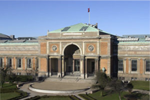
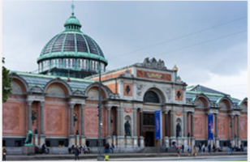
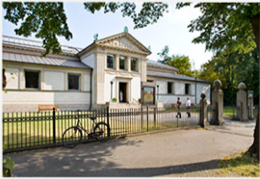
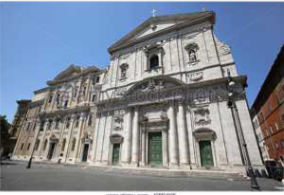

1-Glaeria nacional de dinamarca
2-Gliptoteca Ny Carlsberg
3-Colección Hirschsprung
4-Ordrupgaard
5-Skagens Museum

6-Museo Thorvaldsen

7-ARoS Aarhus Kunstmuseum

8-Palacio de Frederiksborg

9-Randers Museum of Art